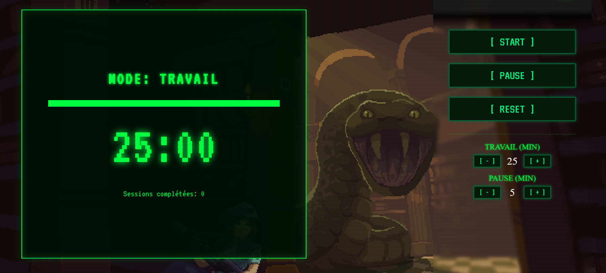

> ACCRÉDITATION REQUISE... [OK]
SYS.ARCHIVES // PROJETS
LECTURE DU FICHIER...
> EN ATTENTE DE SÉLECTION D'UNE CIBLE.
PORTFOLIO TERMINAL
TECHNOLOGIES DÉTECTÉES : HTML | CSS | JS | SVG
RAPPORT DE MISSION
Interface web immersive inspirée des terminaux informatiques de la fin des années 90 et de l'univers Resident Evil. Utilisation de grilles interactives, d'animations CSS (effets CRT) et de manipulation audio/vidéo en JS.
POMODORO
TECHNOLOGIES DÉTECTÉES : Python | CSS | JS

RAPPORT DE MISSION
Application de type Pomodoro pour la gestion du temps et l'augmentation de la productivité. Implémentation d'une interface utilisateur intuitive avec des fonctionnalités de suivi des tâches et de gestion des sessions de travail.
APPRENTISSAGE SVG
TECHNOLOGIES DÉTECTÉES : SVG | CSS | JS

RAPPORT DE MISSION
Exploration et maîtrise des capacités de l'élément SVG pour créer des graphismes vectoriels interactifs. Implémentation de animations et d'effets visuels dans un contexte pédagogique.